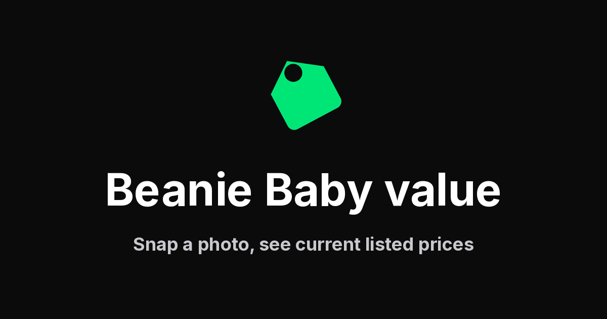

Typing a famous Beanie Baby name into a search box is a common way to look up Beanie Baby value, and it is also a common way to get the wrong market. The same character can exist in more than one tag generation, with or without a hang tag, and in worn or carefully kept condition. A spectacular asking price attached to that name is not the same thing as a sale.
If you want a useful Beanie Baby value, check yours from a photo. Start with the toy in your hand, confirm the name, the tags, and the condition, then look at a current listed range for that version. That is what  How Much Is It Worth: Scanner is built to do.
How Much Is It Worth: Scanner is built to do.
Most Beanie Babies are not a retirement plan. They are 1990s plush toys, and the usual selling picture today is modest. A Mental Floss article dated 21 August 2024 said the vast majority are only worth a couple of dollars at most, while a few versions sometimes sell for more. That article is a reported overview, not a live 2026 catalogue, and it is still a better starting point than a screenshot of a six-figure listing.
The details that move the market are small, which is why a photo is more honest than a remembered name. Start with the animal name and the generation. Ty produced a large number of designs, and many later examples were made in huge quantities. A common loose toy usually sits in that modest area described by Mental Floss, unless you have a documented scarce variant.
Tags matter more than almost anything else you can photograph. Collectors look at the heart-shaped swing tag and the tush tag: the generation, whether it is still attached, creases or punch holes, and small text differences, including spacing and misspellings. Do not peel the tags off. A Beanie Baby without tags is usually a harder sell, and it is harder to tell a scarce version from a common one.
Older examples were often filled with PVC pellets; later ones often used PE pellets. That is a detail for identification, not a reason to open the toy. Stains, smoke, worn plush, and whether the tag is still in a protective cover all move the range as well.
Photograph the whole toy, then a close photo of the swing tag (both sides if you can do that without stressing the tag) and the tush tag. Do not wash the toy or iron a creased tag. Take or upload up to three photos.
The app shows the identification first. If the name or the tag details look off, you correct them before any price lookup. Then you see a Worth about figure, the listed range around it, a confidence level, and the live listings behind the number. There is no Beanie-specific catalogue in the pricing mix in the way Numista sits behind coins, so the listings themselves do more of the work. If the data is thin, the result is labelled as a rough estimate. The product will not invent a precise figure, and it is not a certified appraisal or an offer to buy.
Want to try it? Start your free 3-day trial in the iPhone app at https://apps.apple.com/app/id6832980231. 3 free scans + 3-day unlimited trial. You can also scan it online free at https://howmuchisitworth.today/beanie-baby-value. On Android? Check https://howmuchisitworth.today/ for the Android release.
Princess the Bear is the toy people most often hope is valuable. The useful lesson is not a single number for that bear. Tag details and fill can change the market, mint examples and worn playthings are different, and a spectacular listing can be wishful. Identify the name, the tags, and the condition, then look at recent listings.
You can adjust the condition in a tap and watch the value update. If a result looks off, check whether the comps are a different tag generation or fill, or whether a tag was missed in the photo.
If you decide to sell, you can copy a ready-made listing, with Quick sale, Fair price, or Top dollar, and save the scan to a collection. A draft to eBay, Facebook Marketplace, or Gumtree is more realistic than a million-dollar ask.
We will not invent a price for a name we have not matched to listings, and we will not treat a single asking price as a sold result. If you have a box of them, start with toys that still have both tags, older-looking tags, or names you remember as special releases. A common loose example is still worth identifying so you are not pricing it off a headline.
The app is free to start. Start your free 3-day trial. 3 free scans + 3-day unlimited trial.
If you are trying to find a Beanie Baby value, check yours from a photo. Download the app and scan your first toy free, or start at https://howmuchisitworth.today/beanie-baby-value.
Beanie Babies is a trademark of Ty Inc. This post and the How Much Is It Worth app are not affiliated with, endorsed by, or sponsored by Ty Inc.